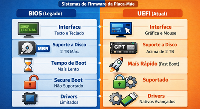
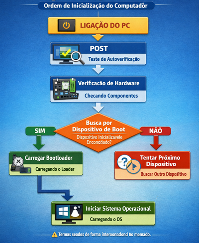

AULA 10 — BIOS/UEFI: CONFIGURAÇÃO INICIAL E SEQUÊNCIA DE BOOT
1. Introdução
Após a montagem concluída na Aula 09, o próximo passo antes de instalar o sistema operacional é configurar o firmware da placa-mãe. Esse firmware é o BIOS ou UEFI — o primeiro software que o computador executa ao ser ligado.
Definição: firmware armazenado em um chip da placa-mãe responsável por inicializar o hardware, verificar a integridade dos componentes e entregar o controle ao sistema operacional.
Sem o BIOS/UEFI configurado corretamente, o sistema pode não reconhecer o dispositivo de armazenamento, não inicializar pelo dispositivo correto ou operar com desempenho abaixo do esperado.
2. BIOS vs. UEFI
O termo BIOS (Basic Input/Output System) é historicamente usado para se referir ao firmware da placa-mãe, mas praticamente todos os sistemas modernos utilizam o UEFI (Unified Extensible Firmware Interface) — uma versão mais moderna e capaz.
| Característica | BIOS (legado) | UEFI (atual) |
|---|---|---|
| Interface | Texto, navegação por teclado | Gráfica, suporte a mouse |
| Suporte a disco | MBR — até 2 TB | GPT — acima de 2 TB |
| Tempo de inicialização | Mais lento | Mais rápido (Fast Boot) |
| Secure Boot | Não suportado | Suportado |
| Drivers de hardware | Limitados | Suporte a drivers nativos |
| Atualização | Processo de risco elevado | Mais seguro (flash via USB ou software) |
💡 Mesmo sendo UEFI internamente, muitos fabricantes ainda chamam a interface de "BIOS" na documentação e no próprio menu. Os termos são usados de forma intercambiável no mercado — o importante é reconhecer as funcionalidades.

3. Como Acessar o BIOS/UEFI
Ao ligar o computador, há uma janela de tempo muito curta para acessar o firmware antes que o sistema operacional inicie.
Teclas de acesso mais comuns
| Fabricante da placa-mãe | Tecla |
|---|---|
| ASUS | Del ou F2 |
| Gigabyte | Del |
| MSI | Del |
| ASRock | F2 ou Del |
💡 A tecla correta geralmente aparece por frações de segundo na tela de POST. Pressionar repetidamente assim que o computador é ligado é a forma mais confiável de não perder a janela.
4. Estrutura Geral do BIOS/UEFI
Apesar de cada fabricante ter uma interface diferente, a organização das configurações segue um padrão lógico comum:
| Seção | O que contém |
|---|---|
| Main / Info | Informações do sistema: versão do firmware, CPU detectada, RAM detectada, data e hora |
| Advanced / Tweaker | Configurações de CPU, memória, XMP/EXPO, tensões |
| Boot | Ordem de boot, Fast Boot, Secure Boot, CSM |
| Security | Senha de acesso ao BIOS, Secure Boot |
| Monitor / Hardware Monitor | Temperaturas, velocidade dos fans, tensões em tempo real |
| Save & Exit | Salvar alterações, descartar, resetar para padrão |
5. Configurações Iniciais Essenciais
5.1 Data e Hora
A primeira configuração a verificar é a data e hora do sistema, mantida pela bateria CMOS. Se estiver incorreta após a montagem, indica bateria fraca ou ausente.
- Localização: seção Main
- Configurar com data e hora atuais
5.2 Verificação dos Componentes Detectados
Ainda na seção Main ou Info, verificar se o BIOS reconheceu corretamente:
- CPU: modelo e frequência base
- RAM: capacidade total e frequência detectada
- Armazenamento: dispositivos SATA e M.2 conectados
⚠️ Se algum componente não aparecer aqui, o problema é de hardware ou conexão — não de configuração. Voltar à bancada e verificar encaixe antes de prosseguir.
5.3 Ativação do Perfil XMP ou EXPO
Por padrão, a RAM opera na frequência base JEDEC (geralmente 2133 MHz para DDR4 ou 4800 MHz para DDR5), independente da frequência especificada no módulo.
- Localização: seção Advanced, Tweaker ou AI Tweaker (ASUS)
- Configuração: ativar XMP (Intel/geral) ou EXPO (AMD AM5)
- Após ativar, a frequência e os timings corretos do módulo são aplicados automaticamente
💡 Ativar o XMP/EXPO é uma das configurações mais simples e com maior impacto no desempenho — especialmente em sistemas com GPU integrada, como visto na Aula 06.
5.4 Modo de Operação do Armazenamento
Define como o controlador SATA opera. Para sistemas modernos, o modo correto é AHCI.
- Localização: seção Advanced → SATA Configuration
- Configuração recomendada: AHCI (não IDE/Legacy)
⚠️ Alterar esse modo após instalar o sistema operacional pode impedir o Windows de inicializar. Definir antes da instalação do SO.
5.5 Configuração de Vídeo Primário
Define qual saída de vídeo é usada primeiro: GPU integrada (iGPU) ou GPU dedicada (PCIe).
- Localização: seção Advanced → Primary Display ou Video
- Com GPU dedicada instalada: selecionar PCIe ou Auto
- Sem GPU dedicada: manter iGPU ou Auto
6. Sequência de Boot

O que é
A sequência de boot define a ordem em que o BIOS/UEFI procura um dispositivo inicializável ao ligar o computador. O firmware tenta cada dispositivo na ordem configurada até encontrar um com sistema operacional ou mídia bootável.
Localização
Seção Boot → Boot Option Priorities (ou equivalente conforme o fabricante).
Dispositivos comuns na sequência
| Dispositivo | Quando usar como primeiro |
|---|---|
| SSD/HD com SO instalado | Uso diário normal |
| Pendrive USB | Instalação de SO, recuperação, diagnóstico |
| DVD/Blu-ray | Instalação de SO por mídia óptica |
| Rede (PXE) | Ambientes corporativos com boot por rede |
Configuração para instalação do sistema operacional
Para instalar o SO, o pendrive ou DVD com a mídia de instalação deve estar antes do disco interno na sequência:
Boot Option 1: Pendrive USB (mídia de instalação)
Boot Option 2: SSD NVMe / HD (disco interno)
Boot Option 3: (demais dispositivos)
Após a instalação concluída, reconfigurar para:
Boot Option 1: SSD NVMe / HD (disco interno com SO)
💡 A maioria dos BIOS/UEFI modernos permite acessar um Boot Menu temporário (geralmente F8, F11 ou F12 ao ligar) para selecionar o dispositivo de boot sem alterar a configuração permanente — útil para instalações e diagnósticos pontuais.
7. Fast Boot e CSM
Fast Boot
Recurso que reduz o tempo de inicialização pulando algumas verificações de hardware durante o POST.
- Vantagem: boot mais rápido no dia a dia
- Desvantagem: pode impedir o reconhecimento de dispositivos USB na inicialização (pendrives bootáveis podem não aparecer)
💡 Ao instalar um SO por pendrive, desativar temporariamente o Fast Boot para garantir que o dispositivo USB seja detectado corretamente.
CSM (Compatibility Support Module)
O CSM emula o comportamento do BIOS legado dentro do UEFI, permitindo inicializar sistemas operacionais e dispositivos que não suportam UEFI nativo.
| CSM | Quando usar |
|---|---|
| Desativado | Sistemas novos com Windows 10/11 em disco GPT — recomendado |
| Ativado | Hardware ou SO legado que não suporta UEFI puro |
⚠️ O Windows 11 exige UEFI com CSM desativado e Secure Boot ativo. Verificar essas configurações antes da instalação.
8. Secure Boot
Recurso UEFI que verifica a assinatura digital do carregador de boot antes de executá-lo, impedindo que softwares não autorizados inicializem junto com o sistema.
| Secure Boot | Implicação |
|---|---|
| Ativado | Exigido pelo Windows 11; impede boot de alguns sistemas Linux sem chave registrada |
| Desativado | Permite boot de qualquer SO; necessário para alguns pendrives de diagnóstico |
💡 A maioria das distribuições Linux modernas (Ubuntu, Fedora) já suporta Secure Boot ativado. Distribuições mais antigas ou ferramentas de diagnóstico podem exigir desativação temporária.
9. Salvar e Sair
Toda alteração no BIOS/UEFI só tem efeito após ser salva explicitamente.
| Opção | Função |
|---|---|
| Save Changes and Reset | Salva todas as alterações e reinicia o sistema |
| Discard Changes and Exit | Descarta todas as alterações desde a última entrada |
| Load Optimized Defaults | Restaura todas as configurações para o padrão de fábrica |
💡 Load Optimized Defaults é o procedimento correto quando o sistema não inicializa após alterações no BIOS, ou quando uma configuração desconhecida está causando instabilidade. Equivalente funcional ao reset pela bateria CMOS, mas sem abrir o gabinete.
🎯 Síntese da Aula
| Configuração | O que faz | Onde encontrar |
|---|---|---|
| Data e hora | Sincroniza o relógio do sistema | Main |
| Verificação de componentes | Confirma detecção de CPU, RAM e armazenamento | Main / Info |
| XMP / EXPO | Ativa a frequência correta da RAM | Advanced / Tweaker |
| Modo SATA (AHCI) | Garante compatibilidade e desempenho do armazenamento | Advanced → SATA |
| Vídeo primário | Define GPU integrada ou dedicada como saída principal | Advanced → Video |
| Sequência de boot | Define ordem de busca por SO inicializável | Boot |
| Fast Boot | Acelera o boot; desativar para instalar SO por USB | Boot |
| CSM | Compatibilidade com hardware/SO legado | Boot |
| Secure Boot | Segurança de inicialização; exigido pelo Windows 11 | Boot / Security |
| Save & Exit | Confirma e aplica todas as alterações | Save & Exit |